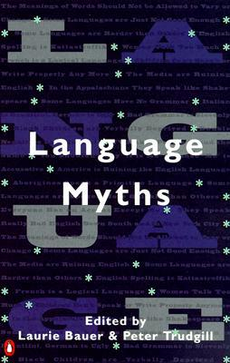
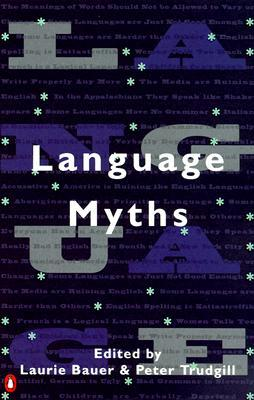

Language Myths
January 22, 2021
I've always found linguistics to be super interesting, especially since language is an ever-evolving thing. So I was super interested in this collection of essays that each tackled a different myth.
I did find that while some of the essays were interesting, a lot of them started to become dry for me, in a way where some of them felt repetitive in topic rather than exploring concepts that were all varied. Another issue I had were that the myths would often be tackled in exactly the way they were written, meaning it was taken literally. For example "The meanings of words should not be allowed to vary or change" was argued in absolutes, and I'm not sure that anyone would agree with that myth.
That being said, I did enjoy the sociolinguistic nature of these myths, especially since I hadn't heard of most of these myths (the book was published over two decades ago). I think it'd be interested to see what some of these essays would tackle today.
More about Language Myths here:
 

Title: Language Myths
Edited by: Luarie Bauer & Peter Trudgill
The media are ruining English"; "Some languages are harder than others"; "Children can't speak or write properly anymore." Such pieces of "cultural wisdom" are often expressed in newspapers and on radio and television. Rarely is there a response from experts in the fields of language and language development. In this book Laurie Bauer and Peter Trudgill have invited nineteen respected linguists from all over the world to address these "language myths"--showing that they vary from the misconceived to the downright wrong.